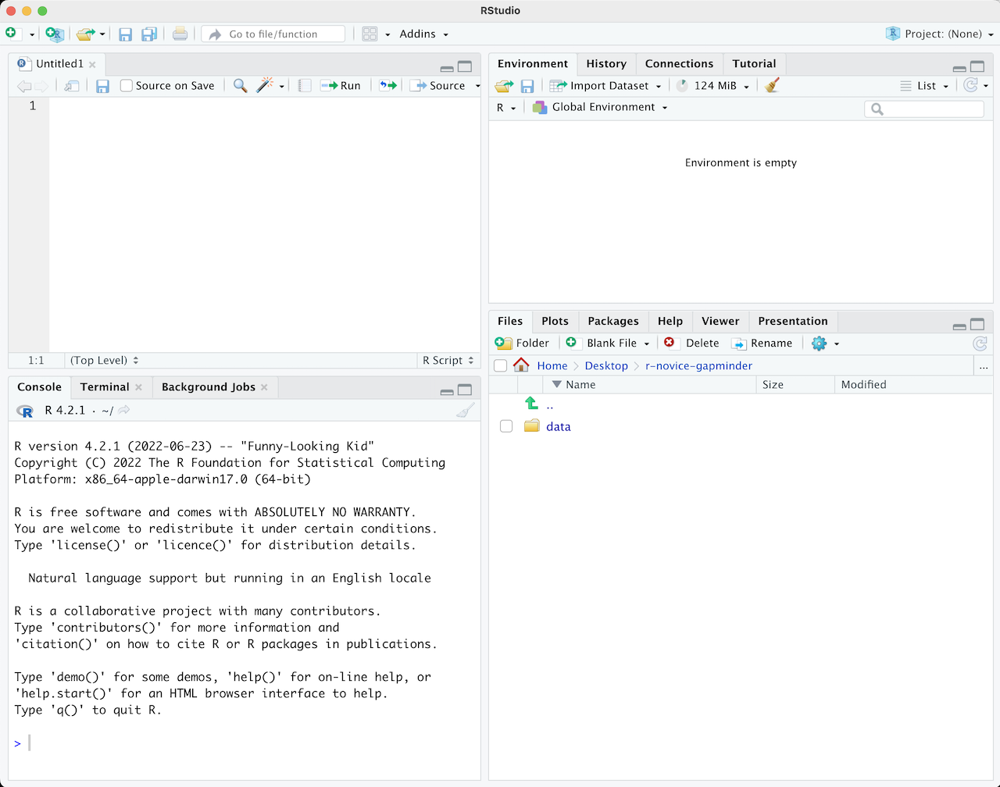

{alt=’RStudio layout’}
{alt=’RStudio layout’}Learning Objectives {.objectives}
- Describe the purpose and use of each pane in RStudio
- Locate buttons and options in RStudio
- Define a variable
- Assign data to a variable
- Manage a workspace in an interactive R session
- Use mathematical and comparison operators
- Call functions
- Manage packages
Questions {.questions}
- How to find your way around RStudio?
- How to interact with R?
- How to manage your environment?
- How to install packages?
Start and R Studio instance in Katana On Demand.
Science is a multi-step process: once you’ve designed an experiment and collected data, the real fun begins with analysis! Throughout this lesson, we’re going to teach you some of the fundamentals of the R language as well as some best practices for organizing code for scientific projects that will make your life easier.
Although we could use a spreadsheet in Microsoft Excel or Google sheets to analyze our data, these tools are limited in their flexibility and accessibility. Critically, they also are difficult to share steps which explore and change the raw data, which is key to “reproducible” research.
Therefore, this lesson will teach you how to begin exploring your data using R and RStudio. The R program is available for Windows, Mac, and Linux operating systems, and is a freely-available where you downloaded it above. To run R, all you need is the R program.
However, to make using R easier, we will use the program RStudio, which we also downloaded above. RStudio is a free, open-source, Integrated Development Environment (IDE). It provides a built-in editor, works on all platforms (including on servers) and provides many advantages such as integration with version control and project management.
We will begin with raw data, perform exploratory analyses, and learn how to plot results graphically. This example starts with a dataset from gapminder.org containing population information for many countries through time. Can you read the data into R? Can you plot the population for Senegal? Can you calculate the average income for countries on the continent of Asia? By the end of these lessons you will be able to do things like plot the populations for all of these countries in under a minute!
Basic layout
When you first open RStudio, you will be greeted by three panels:
{alt=’RStudio layout’}
Once you open files, such as R scripts, an editor panel will also open in the top left.
{alt=’RStudio layout with .R file open’}
R scripts {.callout}
Any commands that you write in the R console can be saved to a file to be re-run again. Files containing R code to be ran in this way are called R scripts. R scripts have
.Rat the end of their names to let you know what they are.
There are two main ways one can work within RStudio:
source() function.Tip: Running segments of your code {.callout}
RStudio offers you great flexibility in running code from within the editor window. There are buttons, menu choices, and keyboard shortcuts. To run the current line, you can
- click on the
Runbutton above the editor panel, or- select “Run Lines” from the “Code” menu, or
- hit Ctrl+Return in Windows or Linux or ⌘+Return on OS X. (This shortcut can also be seen by hovering the mouse over the button). To run a block of code, select it and then
Run. If you have modified a line of code within a block of code you have just run, there is no need to reselect the section andRun, you can use the next button along,Re-run the previous region. This will run the previous code block including the modifications you have made.
Much of your time in R will be spent in the R interactive
console. This is where you will run all of your code, and can be a
useful environment to try out ideas before adding them to an R script
file. This console in RStudio is the same as the one you would get if
you typed in R in your command-line environment.
The first thing you will see in the R interactive session is a bunch of information, followed by a “>” and a blinking cursor. In many ways this is similar to the shell environment you learned about during the shell lessons: it operates on the same idea of a “Read, evaluate, print loop”: you type in commands, R tries to execute them, and then returns a result.
The simplest thing you could do with R is to do arithmetic:
1 + 100
[1] 101
And R will print out the answer, with a preceding “[1]”. [1] is the index of the first element of the line being printed in the console. For more information on indexing vectors, see Episode 6: Subsetting Data.
If you type in an incomplete command, R will wait for you to complete it. If you are familiar with Unix Shell’s bash, you may recognize this behavior from bash.
> 1 +
+
Any time you hit return and the R session shows a “+” instead of a “>”, it means it’s waiting for you to complete the command. If you want to cancel a command you can hit Esc and RStudio will give you back the “>” prompt.
Tip: Canceling commands {.callout}
If you’re using R from the command line instead of from within RStudio, you need to use Ctrl+C instead of Esc to cancel the command. This applies to Mac users as well!
Canceling a command isn’t only useful for killing incomplete commands: you can also use it to tell R to stop running code (for example if it’s taking much longer than you expect), or to get rid of the code you’re currently writing.
When using R as a calculator, the order of operations is the same as you would have learned back in school.
From highest to lowest precedence:
(, )^ or ***/+-3 + 5 * 2
[1] 13
Use parentheses to group operations in order to force the order of evaluation if it differs from the default, or to make clear what you intend.
(3 + 5) * 2
[1] 16
This can get unwieldy when not needed, but clarifies your intentions. Remember that others may later read your code.
(3 + (5 * (2 ^ 2))) # hard to read
[1] 23
3 + 5 * 2 ^ 2 # clear, if you remember the rules
[1] 23
3 + 5 * (2 ^ 2) # if you forget some rules, this might help
[1] 23
The text after each line of code is called a
“comment”. Anything that follows after the hash (or octothorpe) symbol
# is ignored by R when it executes code.
Really small or large numbers get a scientific notation:
2/10000
[1] 2e-04
Which is shorthand for “multiplied by 10^XX”. So 2e-4
is shorthand for 2 * 10^(-4).
You can write numbers in scientific notation too:
5e3 # Note the lack of minus here
[1] 5000
R has many built in mathematical functions. To call a function, we can type its name, followed by open and closing parentheses. Functions take arguments as inputs, anything we type inside the parentheses of a function is considered an argument. Depending on the function, the number of arguments can vary from none to multiple. For example:
getwd() #returns an absolute filepath
[1] "/home/your_zID"
doesn’t require an argument, whereas for the next set of mathematical functions we will need to supply the function a value in order to compute the result.
sin(1) # trigonometry functions
[1] 0.841471
log(1) # natural logarithm
[1] 0
log10(10) # base-10 logarithm
[1] 1
exp(0.5) # e^(1/2)
[1] 1.648721
Don’t worry about trying to remember every function in R. You can look them up on Google, or if you can remember the start of the function’s name, use the tab completion in RStudio.
This is one advantage that RStudio has over R on its own, it has auto-completion abilities that allow you to more easily look up functions, their arguments, and the values that they take.
Typing a ? before the name of a command will open the help page
for that command. When using RStudio, this will open the ‘Help’ pane;
if using R in the terminal, the help page will open in your browser.
The help page will include a detailed description of the command and
how it works. Scrolling to the bottom of the help page will usually
show a collection of code examples which illustrate command usage.
We’ll go through an example later.
We can also do comparisons in R:
1 == 1 # equality (note two equals signs, read as "is equal to")
[1] TRUE
1 != 2 # inequality (read as "is not equal to")
[1] TRUE
1 < 2 # less than
[1] TRUE
1 <= 1 # less than or equal to
[1] TRUE
1 > 0 # greater than
[1] TRUE
1 >= -9 # greater than or equal to
[1] TRUE
Tip: Comparing Numbers {.callout}
A word of warning about comparing numbers: you should never use
==to compare two numbers unless they are integers (a data type which can specifically represent only whole numbers).Computers may only represent decimal numbers with a certain degree of precision, so two numbers which look the same when printed out by R, may actually have different underlying representations and therefore be different by a small margin of error (called Machine numeric tolerance).
Instead you should use the
all.equalfunction.Further reading: http://floating-point-gui.de/
We can store values in variables using the assignment operator <-, like this:
x <- 1/40
>
Notice that assignment does not print a value. Instead, we stored it for later
in something called a variable. x now contains the value 0.025:
x
[1] 0.025
More precisely, the stored value is a decimal approximation of this fraction called a floating point number.
Look for the Environment tab in the top right panel of RStudio, and you will see that x and its value
have appeared. Our variable x can be used in place of a number in any calculation that expects a number:
log(x)
[1] -3.688879
Notice also that variables can be reassigned:
x <- 100
x used to contain the value 0.025 and now it has the value 100.
Assignment values can contain the variable being assigned to:
x <- x + 1 #notice how RStudio updates its description of x on the top right tab
y <- x * 2
The right hand side of the assignment can be any valid R expression. The right hand side is fully evaluated before the assignment occurs.
Variable names can contain letters, numbers, underscores and periods but no spaces. They must start with a letter or a period followed by a letter (they cannot start with a number nor an underscore). Variables beginning with a period are hidden variables. Different people use different conventions for long variable names, these include
What you use is up to you, but be consistent.
It is also possible to use the = operator for assignment:
x = 1/40
But this is much less common among R users. The most important thing is to
be consistent with the operator you use. There are occasionally places
where it is less confusing to use <- than =, and it is the most common
symbol used in the community. So the recommendation is to use <-.
Challenge 1 {.challenge}
Which of the following are valid R variable names?
min_height max.height _age .mass MaxLength min-length 2widths celsius2kelvinSolution
The following can be used as R variables:
min_height max.height MaxLength celsius2kelvinThe following creates a hidden variable:
.massThe following will not be able to be used to create a variable
_age min-length 2widths
One final thing to be aware of is that R is vectorized, meaning that variables and functions can have vectors as values. In contrast to physics and mathematics, a vector in R describes a set of values in a certain order of the same data type. For example:
1:5
[1] 1 2 3 4 5
2^(1:5)
[1] 2 4 8 16 32
x <- 1:5
2^x
[1] 2 4 8 16 32
This is incredibly powerful; we will discuss this further in an upcoming lesson.
There are a few useful commands you can use to interact with the R session.
ls will list all of the variables and functions stored in the global environment
(your working R session):
ls()
[1] "x" "y"
Tip: hidden objects {.callout}
Like in the shell,
lswill hide any variables or functions starting with a “.” by default. To list all objects, typels(all.names=TRUE)instead
Note here that we didn’t give any arguments to ls, but we still
needed to give the parentheses to tell R to call the function.
If we type ls by itself, R prints a bunch of code instead of a listing of objects.
ls
function (name, pos = -1L, envir = as.environment(pos), all.names = FALSE,
pattern, sorted = TRUE)
{
if (!missing(name)) {
pos <- tryCatch(name, error = function(e) e)
if (inherits(pos, "error")) {
name <- substitute(name)
if (!is.character(name))
name <- deparse(name)
warning(gettextf("%s converted to character string",
sQuote(name)), domain = NA)
pos <- name
}
}
all.names <- .Internal(ls(envir, all.names, sorted))
if (!missing(pattern)) {
if ((ll <- length(grep("[", pattern, fixed = TRUE))) &&
ll != length(grep("]", pattern, fixed = TRUE))) {
if (pattern == "[") {
pattern <- "\\["
warning("replaced regular expression pattern '[' by '\\\\['")
}
else if (length(grep("[^\\\\]\\[<-", pattern))) {
pattern <- sub("\\[<-", "\\\\\\[<-", pattern)
warning("replaced '[<-' by '\\\\[<-' in regular expression pattern")
}
}
grep(pattern, all.names, value = TRUE)
}
else all.names
}
<bytecode: 0x55fd24cd5df8>
<environment: namespace:base>
What’s going on here?
Like everything in R, ls is the name of an object, and entering the name of
an object by itself prints the contents of the object. The object x that we
created earlier contains r x:
x
[1] 1 2 3 4 5
The object ls contains the R code that makes the ls function work! We’ll talk
more about how functions work and start writing our own later.
You can use rm to delete objects you no longer need:
rm(x)
If you have lots of things in your environment and want to delete all of them,
you can pass the results of ls to the rm function:
rm(list = ls())
In this case we’ve combined the two. Like the order of operations, anything inside the innermost parentheses is evaluated first, and so on.
In this case we’ve specified that the results of ls should be used for the
list argument in rm. When assigning values to arguments by name, you must
use the = operator!!
If instead we use <-, there will be unintended side effects, or you may get an error message:
rm(list <- ls())
Error in rm(list <- ls()) : ... must contain names or character strings
Tip: Warnings vs. Errors {.callout}
Pay attention when R does something unexpected! Errors, like above, are thrown when R cannot proceed with a calculation. Warnings on the other hand usually mean that the function has run, but it probably hasn’t worked as expected.
In both cases, the message that R prints out usually give you clues how to fix a problem.
It is possible to add functions to R by writing a package, or by obtaining a package written by someone else. As of this writing, there are over 10,000 packages available on CRAN (the comprehensive R archive network). R and RStudio have functionality for managing packages:
installed.packages()install.packages("packagename"),
where packagename is the package name, in quotes.update.packages()remove.packages("packagename")library(packagename)Packages can also be viewed, loaded, and detached in the Packages tab of the lower right panel in RStudio. Clicking on this tab will display all of the installed packages with a checkbox next to them. If the box next to a package name is checked, the package is loaded and if it is empty, the package is not loaded. Click an empty box to load that package and click a checked box to detach that package.
Packages can be installed and updated from the Package tab with the Install and Update buttons at the top of the tab.
Challenge 2 {.challenge}
What will be the value of each variable after each statement in the following program?
mass <- 47.5 age <- 122 mass <- mass * 2.3 age <- age - 20Solution
mass <- 47.5This will give a value of
r massfor the variable massage <- 122This will give a value of
r agefor the variable agemass <- mass * 2.3This will multiply the existing value of
r mass/2.3by 2.3 to give a new value ofr massto the variable mass.age <- age - 20This will subtract 20 from the existing value of
r age + 20to give a new value ofr ageto the variable age.
Challenge 3 {.challenge}
Run the code from the previous challenge, and write a command to compare mass to age. Is mass larger than age?
Solution
One way of answering this question in R is to use the
>to set up the following:mass > ageThis should yield a boolean value of TRUE since
r massis greater thanr age.
Challenge 4 {.challenge}
Clean up your working environment by deleting the mass and age variables.
Solution
We can use the
rmcommand to accomplish this taskrm(age, mass)[1] TRUE
Challenge 5 {.challenge}
Install the following packages:
ggplot2,plyr,gapminderSolution
We can use the
install.packages()command to install the required packages.install.packages("ggplot2") install.packages("plyr") install.packages("gapminder")An alternate solution, to install multiple packages with a single
install.packages()command is:install.packages(c("ggplot2", "plyr", "gapminder"))
Keypoints {.objectives}
- Use RStudio to write and run R programs.
- R has the usual arithmetic operators and mathematical functions.
- Use
<-to assign values to variables.- Use
ls()to list the variables in a program.- Use
rm()to delete objects in a program.- Use
install.packages()to install packages (libraries).